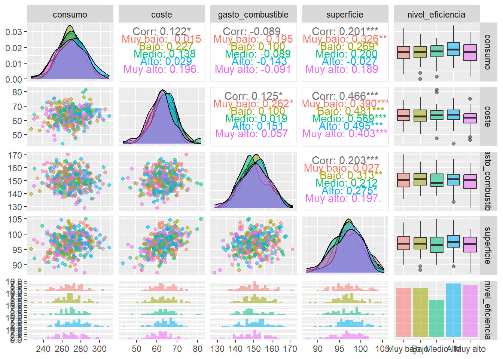
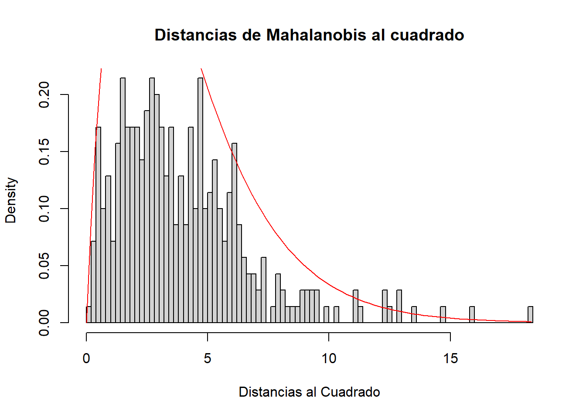
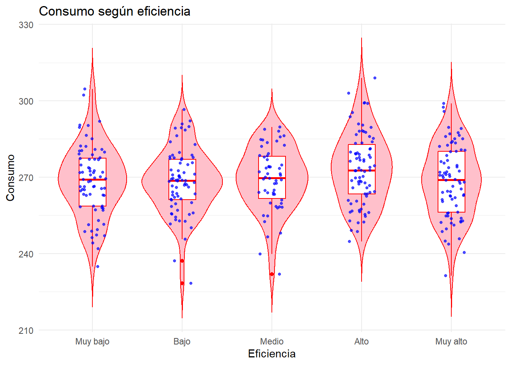
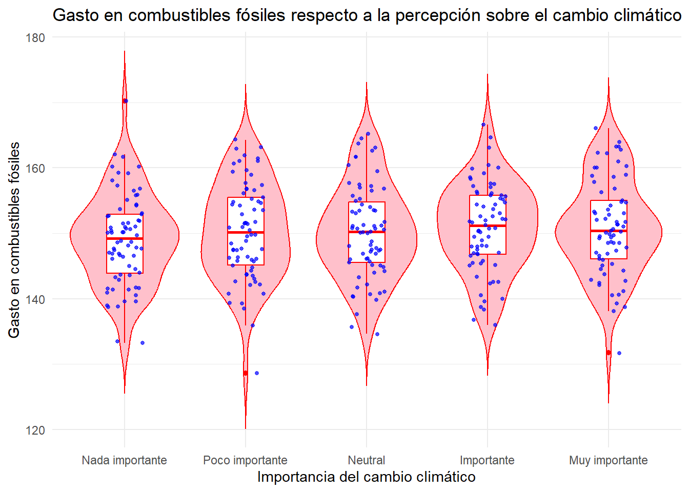
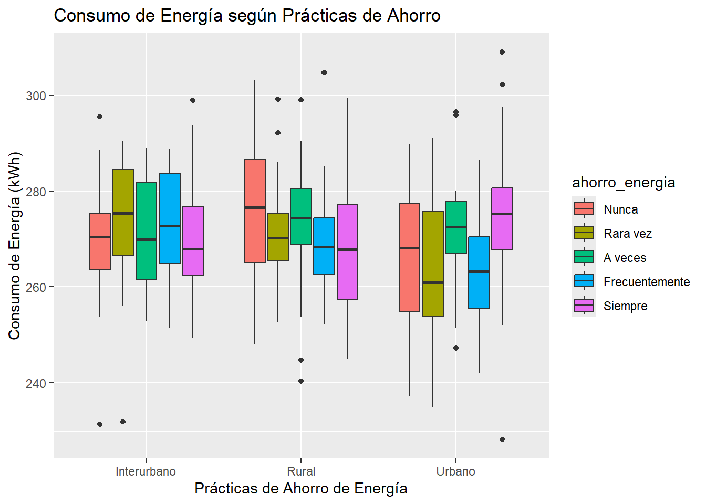

Análisis del uso de la energía en el hogar
Taller 1
https://github.com/srivaUIB/Taller_1_AD
Primer paso:
El principal objetivo de este trabajo es investigar sobre los hábitos energéticos en los hogares de la población y como se relacionan el consumo energético con otros factores como el coste de la factura, la superfície del hogar, el tipo de vivienda, etc.
Primero definiré las variables cuantitativas:
- Consumo energético mensual promedio en kWh.
- Coste mensual promedio de la factura energética en euros.
- Gasto promedio en litros de combustibles fósiles en euros.
- Superfície del hogar en \(m^2\).
Definimos las variables ordinales:
- Nivel de eficacia energética del hogar: “Muy bajo”, “Bajo”, “Medio”, “Alto” y “Muy alto”.
- Cual es la percepción sobre la relevancia del cambio climático: “Nada importante”, “Poco importante”, “Neutral”, “Importante” y “Muy importante”. -
- Con que frecuencia se realizan prácticas de ahorro energético en el hogar: “Nunca”, “Rara vez”, “A veces”, “Frecuentemente” y “Siempre”.
Por último definimos las variables nominales:
- Tipo de vivienda: “Piso”,“Apartamento”, “Adosado” o “Unifamiliar”.
- Zona de residencia: “Urbana”, “Interurbano” o “Rural”.
- Existencia de fuentes de energía renovables en el hogar: “Sí”, “No”.
Segundo paso:
A continuación, vamos a generar los datos que analizaremos: cuatro variables cuantitativas, tres ordinales y tres nominales
Tercer paso
Podemos notar que los diagramas de caja no aportan información relevante, ya que los datos están muy juntos.
También podemos ver que la única correlación con un nivel bajo de significación se da entre el gasto en combustibles fósiles y el consumo energético. Aplicaré un test de correlación para ver como es la correlación en la población.
Pearson's product-moment correlation
data: raw_data$gasto_combustible and raw_data$consumo
t = -1.6713, df = 348, p-value = 0.09555
alternative hypothesis: true correlation is not equal to 0
95 percent confidence interval:
-0.19226701 0.01574132
sample estimates:
cor
-0.08923576 Con este nivel de significación, no podemos rechazar que la correlación sea \(0\).
Finalmente, voy a calcular la distancia de Mahalanobis para ver si sigue una distribución Chi cuadrado:

Asymptotic one-sample Kolmogorov-Smirnov test
data: distancia
D = 0.20123, p-value = 9.781e-13
alternative hypothesis: two-sidedEl p-valor es suficientemente pequeño, por tanto podemos concluir que la distancia sigue una distribución Chi cuadrado.
Relación entre el nivel de eficiencia del hogar y el consumo de energía
Vamos a analizar si existe algún tipo de relación entre la cantidad de energía que se consume en un hogar y el nivel de eficiencia energética que tiene este mismo.

Podemos ver que los gráficos se encuentran todos al mismo nivel, por tanto, no podemos concluir nada significativo.
Df Sum Sq Mean Sq F value Pr(>F)
nivel_eficiencia 4 1392 347.9 1.875 0.114
Residuals 345 64034 185.6 El p-valor es grande y por tanto, no podemos rechazar la hipótesis de que haya diferencias significativas entre el consumo energético y el nivel de eficiencia energética del hogar. Es decir, no podemos concluir que el nivel de eficiencia energética afecte al consumo de energía.
Relación entre el coste mensual de la factura energética y el tipo de vivienda

De nuevo, el diagrama no nos permite sacar ninguna conclusión útil.
Df Sum Sq Mean Sq F value Pr(>F)
tipo_vivienda 3 40 13.43 0.442 0.723
Residuals 346 10523 30.41 Como el p-valor es grande, no podemos rechazar la hipótesis nula, por tanto no podemos concluir que el tipo de vivienda afecte al coste de la factura de energía.
Relación entre el gasto en combustibles fósiles y la percepción sobre el cambio climático

Df Sum Sq Mean Sq F value Pr(>F)
relevancia_cambio 4 156 38.89 0.769 0.546
Residuals 345 17444 50.56 El p-valor vuelve a ser grande, por tanto, no hay suficiente evidencia como para concluir que la percepción sobre el cambio climático puede afectar al gasto en combustibles fósiles.
Análisis del impacto de las prácticas de ahorro energético en el consumo y coste energético

En este gráfico podemos ver que el consumo se mantiene en un mismo rango para todas las categorías. En las zonas interurbanas, parece que las personas que nunca llevan a cabo prácticas de ahorro consumen de media más energía, mientras que en las zonas urbanas, pasa lo contrario. Pero en general, el gráfico no aporta información relevante.
[1] 1992256[1] 278.036La varianza generalizada es \(1992256\), lo cual es un valor bastante grande; esto indica que la dispersión de los datos es elevada. La varianza total es \(278.036\).
Cuarto paso
En este apartado vamos a trabajar con la variable nivel_eficiencia), que recordemos que nos da el valor del nivel de eficiencia energética del hogar clasificado entre cinco niveles: “Muy bajo”, “Bajo”, “Medio”, “Alto”, “Muy alto”.
.
Muy bajo Bajo Medio Alto Muy alto
0.2028571 0.2028571 0.1542857 0.2228571 0.2171429 .
Muy bajo Bajo Medio Alto Muy alto
71 71 54 78 76 Un evento de interés en una muestra de tamaño \(20\) sería por ejemplo que ningún hogar tuviese niveles de eficiencia “Alto” ni “Muy alto”. consideremos por ejemplo que en la muestra hay \(5\) observaciones de “Muy bajo”, \(10\) de “Bajo” y \(5\) de “Medio”.
[1] 1.649994e-07Como podemos observar, la probabilidad del suceso es extremadamente baja.
Quinto paso
A continuación vamos a ajustar un modelo de regresión multivariante de la forma:
\[Y=\beta_0+\beta_1 X_1+\beta_2 X_2+ \epsilon\] Donde postularé que la variable \(Y\), que referencia al consumo energético de un hogar, tiene una relación lineal con el coste de la factura energética \(X_1\) y la superfície del hogar \(X_2\).
Shapiro-Wilk normality test
data: ajuste$residuals
W = 0.99782, p-value = 0.9321Tenemos suficiente evidencia como para confirmar que los residuos siguen una distribución normal.
La función score es muy cercana a cero, por lo tanto, los parámetros estimados en el ajuste lineal se encuentran en un máximo.
Sexto paso
En este paso vamos a realizar un contraste de hipótesis de dos medias multivariante para analizar si el vector de medias de la variable que da el consumo energético es el mismo para dos niveles diferentes de la variable que da el nivel de eficiencia; en este caso tomaremos los niveles “Alto” y “Bajo”:
[,1] [,2] [,3] [,4]
[1,] 4.319859 -0.1432154 0.3661435 0.7532754El estadístico contiene valores negativos, lo cual nos indica que no seguirá una distribución Chi cuadrado, por tanto, podemos rechazar la hipótesis nula y concluir que las medias son diferentes según el nivel de eficiencia.
Conclusión
En conclusión, las variables cuantitativas están correlacionadas entre ellas; salvo el gasto en combustible y el consumo, que no se puede rechazar que la correlación sea nula.
Por otro lado, no hemos podido extraer ninguna conclusión interesante de la relación entre las variables que hemos estudiado, ya que no parece haber una relación entre estas. Lo único que hemos concluido es que sí que puede existir diferencias relevantes en el consumo medio según el nivel de eficiencia energética.
El problema de no haber concluido nada interesante se puede deber a que los datos no son reales, y por tanto, puede que haya variables que tomen valores que no tengan sentido con otras. Creo que sería mejor trabajar directamente con una base de datos real a la hora de hacer el análisis.
Bibliografía
Toda la información ha sido sacada de los apuntes de la asignatura y de la guía de R.